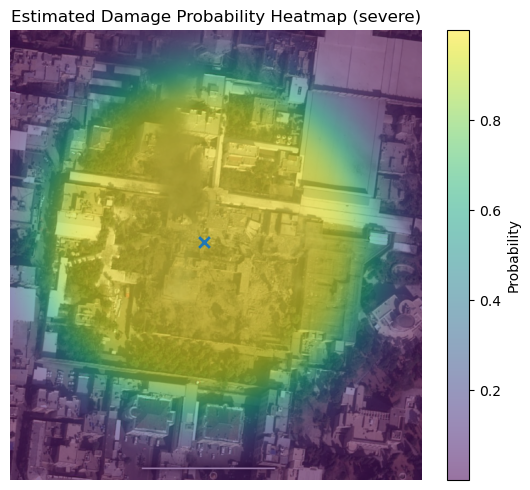

24장 폭격 파괴력 분석#
1. 이란 지도부 관저 파괴 전후 사진#

출처: https://www.abc.net.au/news/2026-03-01/abc-verify-satellite-over-ayatollah-compound/106402030
ChatGPT 설명#
위 이미지는 동일 지역의 폭격 전(좌)과 폭격 후(우)를 위성 사진으로 비교한 것으로 보인다. 이를 기반으로 구조적 파괴 정도, 열·충격 효과, 공간적 영향 범위를 중심으로 분석한다.
1. 구조물 파괴 양상 비교#
(1) 건물 붕괴 형태#
좌측(폭격 전):
대형 직사각형 구조물과 인접한 소형 건물들이 명확한 지붕 형상을 유지.
그림자와 건물 윤곽이 뚜렷하며, 지붕 손상 흔적 없음.
우측(폭격 후):
중심부 대형 건물이 거의 완전 붕괴.
지붕 구조가 사라지고 내부 구조가 노출된 형태.
잔해가 주변으로 광범위하게 확산.
부분 붕괴가 아니라 전면적 구조 실패(total structural failure) 수준.
→ 이는 단순 화재가 아닌 고폭성 충격에 의한 구조적 붕괴로 해석된다.
2. 폭발 중심 및 에너지 전달 특성#
(1) 파괴 중심점#
우측 이미지에서 가장 심각한 손상은 중앙 복합 구조물.
주변 건물은 상대적으로 덜 손상 → 폭발 중심이 내부 혹은 건물 바로 인접 지점일 가능성.
(2) 수직 붕괴 vs 측면 충격#
건물이 옆으로 날아간 형태라기보다
위에서 아래로 무너진 패턴.
이는 공중 투하형 정밀 타격 혹은 상부 관통 후 내부 폭발 가능성을 시사.
3. 열 효과 및 2차 피해#
검은 연기 흔적이 상부로 길게 형성.
이는 단순 구조 붕괴가 아니라 고온 연소 및 2차 화재 동반 가능성 높음.
잔해 색상 차이로 보아 내부 자재가 연소되었을 가능성 있음.
4. 공간적 파괴 범위 추정#
정량적 거리 측정은 불가능하지만 시각적 비율로 보면:
심각한 붕괴 반경: 약 해당 건물 부지 전체 + 인접 건물 일부
중등도 손상 반경: 약 1~2개 건물 거리
경미한 손상 반경: 추가적으로 주변 블록 일부
이는 고폭 탄두의 국지적 정밀 타격(localized high-yield precision strike) 특징과 유사한 양상이다.
5. 파괴력 수준 평가#
파괴력을 구조적 관점에서 분류하면:
평가 항목 |
수준 |
|---|---|
구조 붕괴 정도 |
매우 높음 (전면 붕괴) |
열 손상 |
높음 |
주변 파급 범위 |
제한적이나 확실한 2차 손상 존재 |
정밀도 |
중심 타겟에 집중된 형태 |
즉, 광역 파괴형이 아니라 특정 구조물에 집중된 고에너지 타격으로 보인다.
6. 군사적 관점에서의 특징 (일반적 분석)#
이러한 패턴은 일반적으로:
대형 폭발물의 직접 타격
관통 후 내부 폭발
탄두가 목표 내부에서 폭발하여 내부 압력 상승 → 구조 붕괴
와 유사한 결과를 보인다.
7. 한계점#
위성 해상도 제한
촬영 각도와 시간 차이
구조물 내부 상태 미확인
사용된 무기 유형 특정 불가
따라서 이는 외형적 피해 분석에 한정된 평가이다.
필요하다면 다음도 분석 가능하다:
충격파 전파 패턴 추정 모델
구조공학적 붕괴 메커니즘 분석
폭발 에너지 수준의 대략적 역추정(공학적 접근)
전후 픽셀 기반 손상 면적 정량화 방법 설명
어느 방향으로 더 깊게 분석할지 지정해줘.
2. 충격파 전파 패턴 추정 모델#
ChatGPT 설명#
충격파 전파 패턴을 “추정”하려면 보통 두 층으로 나눠서 모델링한다. 1) 자유공간에서의 폭풍파(blast wave) 스케일링으로 1차 근사 2) 도시/구조물 때문에 생기는 비등방성(방향성), 반사, 차폐를 보정하는 2차 모델. 위성 전후 사진처럼 “피해 흔적”만 있을 때는 1)로 대략적인 등과압선(isobar) 형태를 만들고, 2)로 왜곡시키는 방식이 가장 실용적이다.
아래는 바로 쓸 수 있는 “추정 모델” 틀이다.
1) 1차 근사: 자유공간 구면 전파 + Hopkinson–Cranz 스케일링#
폭발을 TNT 등가 질량 \(W\) (kg TNT)로 치환하고, 폭심으로부터 거리 \(R\) (m)에서의 스케일 거리를
로 둔다. 그러면 피크 과압(incident peak overpressure) \(\Delta P_i\)는
형태(경험식/테이블 기반)로 표현된다. 실제로는 Kingery–Bulmash 같은 경험식이 \(f(Z)\)를 제공한다. 여기서 핵심은 “같은 \(Z\)면 비슷한 충격파 강도”라는 점이다.
피크 과압 말고, 구조물 피해와 더 직결되는 지표로 양의 위상 임펄스(positive phase impulse) \(I_+\)도 함께 쓴다.
즉, 1차 모델의 출력은 거리 \(R\)마다 \((\Delta P_i(R), I_+(R))\) 두 장의 방사형 프로파일이다.
이 단계에서의 등과압선은 완전한 원(구면의 단면)이다. 피해 패턴이 원형에 가깝다면 이 근사만으로도 꽤 설명된다.
2) 반사/정면압 보정: 목표물 면에서의 reflected overpressure#
건물 벽처럼 파가 정면으로 때릴 때는 반사 때문에 실제 작용 압력이 커진다. 반사압을 \(\Delta P_r\)라 두면, 단순화해서
처럼 쓴다. 여기서 \(P_0\)는 대기압, \(\gamma\)는 비열비(공기). \(\Phi\)는 반사계수인데, 정밀식은 유체역학 기반이지만 실무 추정에서는 “반사압이 incident보다 크다”는 방향성만 잡아도 된다.
피해가 “폭심에 가까운 벽면 파괴/창 파손” 중심이면 \(\Delta P_r\)를 쓰는 쪽이 잘 맞는다.
3) 도시에서의 2차 모델: 원형을 ‘왜곡’시키는 전파 커널#
현실은 건물들이 충격파를
차폐(shielding)
채널링(골목을 따라 흐르는 효과)
반사/다중반사
회절(diffraction)
로 바꾼다. 이를 간단히 “공간 가중치 필드” \(A(x)\)로 모델링한다. 위치 \(x\)에서의 유효 과압을
로 둔다. 여기서 \(R(x)\)는 폭심에서 \(x\)까지의 거리. \(A(x)\)가 1이면 자유공간과 동일, 0.5면 절반으로 약화, 1.5면 반사/집중으로 강화 같은 의미다.
문제는 \(A(x)\)를 어떻게 만들까인데, 위성사진 기반이면 다음이 현실적이다.
3.1 차폐-가시선(LOS) 기반 모델#
폭심에서 위치 \(x\)까지 직선(가시선)이 건물 덩어리를 통과하면 감쇠를 준다.
\(L_{\text{occ}}(x)\): 폭심–\(x\) 선분이 “불투명 장애물(건물)”을 통과한 총 길이
\(k\): 감쇠 강도 파라미터
이러면 큰 건물이 방패처럼 서 있는 방향에서 피해가 급격히 줄어드는 패턴이 나온다.
3.2 도로/골목 채널링 보정#
충격파가 열린 통로(도로)를 따라 더 멀리 가는 효과를 “경로 비용”으로 모델링한다. 폭심에서 \(x\)까지의 유효거리 \(R_{\text{eff}}(x)\)를 최단경로로 정의:
열린 공간(도로, 공터)은 비용 \(c(s)\)를 작게
건물 내부/두꺼운 장애물은 비용을 크게
그 다음
로 계산하면, 등과압선이 도로를 따라 길쭉하게 늘어나는 형태가 자연스럽게 나온다.
이건 “Eikonal/fast marching” 류로 구현하는 전형적인 방식이다(정확한 CFD는 아니지만 패턴은 그럴듯하게 잘 나온다).
4) 피해 관측치로 파라미터 역추정#
사진에서 얻는 건 보통 “연속 압력”이 아니라 “피해 등급”이다. 예를 들어 위치 \(x\)마다 피해 등급 \(D(x)\)를
0: 무피해
1: 경미(유리/지붕 일부)
2: 중간(부분 붕괴)
3: 심각(전면 붕괴)
처럼 라벨링한다(수작업 or 세그멘테이션). 그리고 등급별 임계 과압 \(\theta_j\)를 두고
\(\sigma(t) = \frac{1}{1+e^{-t}}\)
\(\alpha\): 경계의 날카로움
이렇게 하면 모르는 것들 \(W, k, \theta_j, \alpha\)를 최대우도(MLE)나 베이지안으로 맞출 수 있다.
실무적으로는 먼저 \(A(x)=1\)로 두고 \(W\)만 대충 맞춘 뒤, \(k\) 같은 도시감쇠 파라미터를 추가해서 “방향성”을 맞추는 순서가 안정적이다.
5) 이 모델로 뭘 얻나: “충격파 전파 패턴 지도”#
최종 산출물은 보통 2장이다.
\(\Delta P_{\text{eff}}(x)\) 히트맵: 등과압선이 원형에서 왜곡된 형태로 나타남
\(P(D(x)\ge j)\) 지도: 피해 확률(또는 피해 등급 기대값) 지도
이 둘을 겹치면, 사진에서 보이는 “피해가 특정 방향으로 더 뻗은 이유”를 채널링/차폐로 설명할 수 있다.
원하면, 지금 너가 준 전후 이미지 기준으로 “피해 마스크를 어떻게 만들고(간단 휴리스틱), 위 모델 파라미터를 어떻게 맞추는지”까지 파이썬으로 바로 이어서 제시할 수 있다. 다만 그건 실제 이미지 픽셀 단위로 처리가 필요해서, 너가 원하는 출력 형태(예: 등과압선 3개만, 혹은 피해확률 히트맵까지)를 한 줄로 정해주면 거기에 맞춰 모델을 구체화할게.
3. 피해확률 히트맵#
ChatGPT 분석#
피해확률(여기서는 “심각 피해(severe)” 확률) 히트맵을 만들었다. 전(좌)–후(우) 이미지의 픽셀 차이를 피해 강도 proxy로 두고, 추정 폭심 \((c_x,c_y)\)에서의 거리 \(r\)에 대해 로지스틱 형태로
처럼 감소한다고 놓았다. 여기서 \(r_2\)는 앞서 만든 중간 등과압선 반경(누적 75% 반경)이고, \(s\)는 전이 폭(대략 \(0.1r_2\))이다. 즉 \(r=r_2\)에서 \(p_{\text{severe}}=0.5\)가 되도록 정규화한 “상대적” 피해확률 지도다(절대 kPa 기반 아님).
오버레이(폭격 후 영상 위)

원하면 같은 방식으로 “경미 이상(any damage)”도 함께 그릴 수 있다(바깥 반경 \(r_3\)에서 0.5가 되게 정의).
참고: 파이썬 코드#
from PIL import Image
import numpy as np
import matplotlib.pyplot as plt
# -------------------------------------------------
# 0. 유틸: RGB -> 그레이스케일
# -------------------------------------------------
def to_gray(a):
# ITU-R BT.601 계수(가중합)로 밝기 변환
return (0.299*a[...,0] + 0.587*a[...,1] + 0.114*a[...,2]).astype(np.float32)
# -------------------------------------------------
# 1. 유틸: 적분영상 기반 박스 블러(평균 필터) - 매우 빠름
# -------------------------------------------------
def box_blur_fast(img2d, k=9):
"""
img2d: (H, W) float32
k: 커널 크기(홀수 권장)
반환: (H, W) float32 블러 결과
"""
if k < 1:
return img2d.copy()
pad = k // 2
# 경계는 edge 패딩(원 코드와 동일한 효과)
p = np.pad(img2d, ((pad, pad), (pad, pad)), mode="edge")
# 적분영상(Integral Image): 누적합을 이용해 사각형 합을 O(1)로 계산
# 편의를 위해 (H+1, W+1)로 0 패딩된 누적합 형태 사용
s = np.pad(p, ((1, 0), (1, 0)), mode="constant").cumsum(axis=0).cumsum(axis=1)
# 각 위치에서 kxk 윈도우 합을 한 번에 계산
# 윈도우 좌상단(i, j) ~ 우하단(i+k-1, j+k-1) 합:
# sum = S[i+k, j+k] - S[i, j+k] - S[i+k, j] + S[i, j]
H, W = img2d.shape
sum_k = (
s[k:k+H, k:k+W]
- s[0:H, k:k+W]
- s[k:k+H, 0:W]
+ s[0:H, 0:W]
)
return (sum_k / (k * k)).astype(np.float32)
# -------------------------------------------------
# 2. 입력 이미지 로드 및 좌/우 분리(폭격 전/후 가정)
# -------------------------------------------------
img_path = "../images/24-1.png"
img = Image.open(img_path).convert("RGB")
arr = np.array(img)
h, w, _ = arr.shape
mid = w // 2
left = arr[:, :mid, :] # 폭격 전
right = arr[:, mid:, :] # 폭격 후
# -------------------------------------------------
# 3. 전후 차이(피해 proxy) 계산 + 블러로 안정화
# -------------------------------------------------
gL = to_gray(left)
gR = to_gray(right)
diff = np.abs(gR - gL)
# 느린 이중 for문 대신, 적분영상 박스블러로 대체
k = 9
blur = box_blur_fast(diff, k=k)
# -------------------------------------------------
# 4. 변화량 상위 일부를 "강한 피해" 후보로 보고 폭심(가중 중심) 추정
# -------------------------------------------------
thr = np.percentile(blur, 99.2) # 상위 0.8%
mask = blur >= thr
weights = blur * mask
ys, xs = np.indices(weights.shape)
W = weights.sum()
# 안전장치: 임계값이 너무 높아 mask가 비는 경우
if W == 0:
cy, cx = h / 2, (mid) / 2
else:
cy = (ys * weights).sum() / W
cx = (xs * weights).sum() / W
# -------------------------------------------------
# 5. 폭심으로부터 반경 r 계산
# -------------------------------------------------
dy = ys - cy
dx = xs - cx
r = np.sqrt(dx*dx + dy*dy)
# -------------------------------------------------
# 6. 피해 강도 누적 분포로 등과압선 반경 3개(r1,r2,r3) 정의
# -------------------------------------------------
r_flat = r.ravel()
w_flat = weights.ravel()
order = np.argsort(r_flat)
r_sorted = r_flat[order]
w_sorted = w_flat[order]
cum = np.cumsum(w_sorted)
total = cum[-1] if cum.size else 0.0
levels = [0.50, 0.75, 0.90]
radii = []
if total == 0.0:
# 피해 픽셀이 사실상 없을 때의 안전 처리
r1 = r2 = r3 = 1.0
else:
for lv in levels:
idx = np.searchsorted(cum, lv * total)
idx = min(max(idx, 0), len(r_sorted) - 1)
radii.append(r_sorted[idx])
r1, r2, r3 = radii
# -------------------------------------------------
# 7. 거리 기반 피해 확률(상대적) 모델: 로지스틱
# -------------------------------------------------
def logistic(z):
return 1.0 / (1.0 + np.exp(-z))
# 전이 폭(대략 반경의 10%)을 둬서 너무 급격한 계단이 되지 않게 함
s_any = max(1.0, 0.10 * r3)
s_sev = max(1.0, 0.10 * r2)
# r=r3에서 p_any≈0.5, r=r2에서 p_sev≈0.5가 되도록 설정
p_any = logistic((r3 - r) / s_any)
p_sev = logistic((r2 - r) / s_sev)
p_any = np.clip(p_any, 0, 1)
p_sev = np.clip(p_sev, 0, 1)
# -------------------------------------------------
# 8. 시각화: 폭격 후 이미지 위에 피해확률(심각) 히트맵 오버레이
# -------------------------------------------------
fig, ax = plt.subplots(figsize=(7, 5))
ax.imshow(right)
hm = ax.imshow(p_sev, alpha=0.55) # 컬러맵 기본값 사용
ax.scatter([cx], [cy], s=60, marker="x", linewidths=2)
ax.set_axis_off()
ax.set_title("Estimated Damage Probability Heatmap (severe)")
cbar = plt.colorbar(hm, ax=ax, fraction=0.046, pad=0.04)
cbar.set_label("Probability")
fig.tight_layout()
plt.show()
